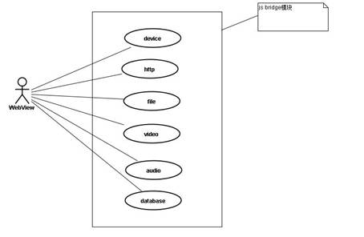
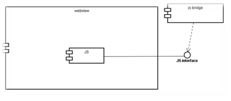
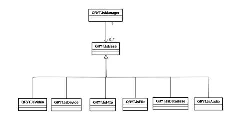
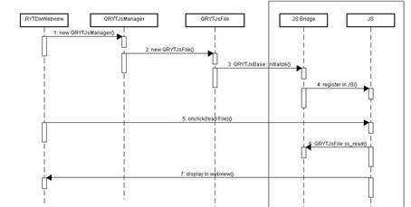

本文档根据《EMP JS Bridge Ver1.0.0.docx》文档描述，添加QT与js脚本的交互功能。
QT提供了一个控件类（QWebView）,该控件能够显示html文件并加载js脚本。
而类（QWebFrame），是控件类（QWebView）一个主框架，所有的内容都显示在该Frame中，也包括远程加载对应的JS脚本执行相应的JS的操作。
由于QWebFrame 提供了一个addToJavaScriptWindowObject()接口， 所以在QT Webkit下添加一个自定义的Javascript对象就变得非常的容易，要注意在跨页面的时候，该对象会被清除，所以你只要重新加回来就可以了， 这一点跟GTK类似， 只要捕获WindowObjectCleared信号，在该信号处理函数里面执行
addToJavaScriptWindowObject()就可以了。
这种方法不用去修改Webkit的核心代码WebCore或者JavascriptCore, 所有工作都在应用层面实现，可以说是简单又实用。
具体可以参考如下源代码
// 实现一个新类
class QFoo : public QObject
{
Q\_OBJECT
public:
QFoo(QObject \*parent) {}
void initialize(QWebView \*wv);
public slots:
void print(const QString &msg);
private slots:
void addObject();
private:
QWebFrame \*wf;
};
void QFoo::setWebView(QWebView \*wv)
{
wf = wv->page()->mainFrame();
// Add to the javascript window object
addObject();
// connect the signal for javascript window object cleared, which happened
// at page switching etc.
connect(wf, SIGNAL(javaScriptWindowObjectCleared()), this, SLOT(addObject()));
}
void QFoo::addObject()
{
wf->addToJavaScriptWindowObject(QString("QFoo"), this);
}
void QFoo::print(const QString &msg)
{
qDebug() << "Output the message " << msg;
}
// 测试主函数
int main(int argc, char \*argv[])
{
QApplication test(argc, argv);
QWebView \*wv = new QWebView();
QFoo \*foo = new QFoo(wv);
foo->initialize(wv);
wv->setUrl(QUrl("foo.html"));
wv->show();
return test.exec();
}
HTML测试代码很简单：
<script>
QFoo.print("Hello world!");
</script>
在QT中我们可以通过evaluateJavaScript()函数很方便的执行js语句，evaluatejavascript()函数返回的是js脚本文件的最后一行执行的结果，这个结果可以一个字符，数值，也可以是一个数组，甚至是一个js对象。返回的结果保存在QVariant中。
这样，我们就能够通过该函数和JS交互了。
代码示例：
在QFoo中添加如下函数：
void QFoo::addObject()
{
wf-> evaluateJavaScript ("message()");
}
HTML中代码为：
<script>
function message()
{
alert("This is javaScript Message!")
}
</script>
}
由于本文需要添加一个和JS交互的接口，所以该JS的接口需要用java script编写，需要开发人员了解JS的基本语法，方便以后扩展新的功能，本文并不讲Js的编写，研发人员可以通过其他书籍学习。
根据第二章的概要描述，我们已经能够简单的了解一个添加自定义对象的过程，即使写出了一个简单的交互流程，也需要不断的重复的做相同的工作，这时候我们就需要一个基类来完成所有的注册，回调的基本功能，而针对派生的每个子类，具体完成的功能，由具体需求来定，这样代码就能够复用，以后开发人员就只需要创建自己的类，派生基类就可以只关注该派生类的具体功能了，于是一个基类（QRYTJsBase）就产生了，该基类主要完成一些注册和回调等工作，这样开发人员就可以派生父类（QRYTJsBase），在自己的派生类完成自己需要的具体需求，而不关心底层的实现。
再用一个管理类（QRYTJsManager）聚合所有的派生于（QRYTJsBase）的类，这样一个简单干净高效的功能模块就可以实现了。
备注：本节从宏观说明该模块的设计思路，不涉及的具体的编码和实现。
在写自己的派生类的时候，派生类的需要实现的JS 扩展接口需要在JS模块中注册，这涉及到JS脚本的编写，需要扩展接口的开发人员了解JS脚本编程和自己新扩展的类的注册函数一一对应，方能完成功能开发。
在最后一节，会以一个简单的例子来完成一个简单接口的实现。
本架构模块属于JS的功能扩展模块，根据具体的类名来分：




下面以一个例子来解释怎么添加一个新的类和js交互。
Example:
我们需要添加一个camera的摄像头拍照工功能，接口函数为：
Camera::open(successCallback,failCallback)
该函数接口在《EMP JS Bridge Ver1.0.0.docx》文档描述（该功能不能再PC平台上实现，只是作为演示）
Js脚本的如下（EMPJSBridge-1.0.0_qt.js）
function camera\_open(fn\_successCallback,fn\_failCallback)
{
QRYTJsCamera.open(fn\_successCallback,fn\_failCallback);
}
camera=new Object();
camera.open=camera\_open;
QT代码如下：
在BankClient_Js文件夹下，创建qrytjscamera.h和qrytjscamera.cpp文件
qrytjscamera.h的文件内容如下：
#ifndef QRYTCAMERA\_H
#define QRYTCAMERA\_H
#include <QString>
#include <QStringList>
#include "qrytjsbase.h"
class QWebFrame;
class QWebView;
class QRYTJsCamera : public QRYTJsBase
{
Q\_OBJECT
public:
explicit QRYTJsCamera(QObject \*parent = 0);
QRYTJsCamera(const QWebView \*aWebView,QObject \*parent = 0);
virtual ~QRYTJsCamera();
signals:
public slots:
//打开照相机
void open(const QString& aSuccessCallback,const QString& aFailCallback);
};
#endif // QRYTCAMERA\_H
看到这先对比脚本中的JS 调用的（QRYTJsCamera.open(fn_successCallback,fn_failCallback);）
和qrytjscamera.h函数中的声明函数（void open(const QString& aSuccessCallback,const QString& aFailCallback); ）
他们的函数名和类型都是一样的，这就是JS回调到QT所触发的调用函数。
注意：JS里要回调QT的函数，必须声明成SLOT函数。
让我们再看qrytjscamera.cpp的内容
#include "qrytjscamera.h"
#include <QWebView>
#include <QWebFrame>
#include <QDebug>
QRYTJsCamera::QRYTJsCamera(QObject \*parent) :
QRYTJsBase(parent)
{
}
QRYTJsCamera::QRYTJsCamera(const QWebView \*aWebView,QObject \*parent) :
QRYTJsBase(aWebView,"QRYTJsCamera",parent)
{
}
QRYTJsCamera::~QRYTJsCamera()
{
}
void QRYTJsCamera::open(const QString& aSuccessCallback,const QString& aFailCallback)
{
qDebug() << "QRYTJsCamera::open";
bool isOpened = false;
//-----open Camera begin
//todo----
//-----open Camera end
//回调
if(isOpened)
{
if(aSuccessCallback.size() <= 0)
return;
//成功打开，回调打开
QString ImagePath = "./default.jpg";
InvokeCallBackFromJS(aSuccessCallback,ImagePath);
}
else
{
if(aFailCallback.size() <=0 )
return;
//打开失败后，回调失败的信息
QString errorMessage = "Camera can not be opened";
InvokeCallBackFromJS(aFailCallback,errorMessage);
}
}
该实现如上所述，特别注意的是，传过来的两个回调函数，通过调用基类的QRYTJsBase的InvokeCallBackFromJS函数来回传给JS，通知JS来做不同的操作。
备注：InvokeCallBackFromJS的函数又不同的重载方式，用户可以根据JS要求的不同参数来选择不同的函数调用。
最后在void QRYTJsManager::CreateAllJsObjects(const QWebView *aWebView)的函数中，创建该实例对象，代码如下：
void QRYTJsManager::CreateAllJsObjects(const QWebView \*aWebView)
{
QRYTJsBase \*temp\_camera = new QRYTJsCamera(aWebView);
QRYTJsBase \*temp\_video = new QRYTJsVideo(aWebView);
QRYTJsBase \* temp\_device = new QRYTJsDevice(aWebView);
QRYTJsBase \* temp\_http =new QRYTJsHttp(aWebView);
QRYTJsBase\* temp\_file = new QRYTJsFile(aWebView);
QRYTJsBase\* temp\_database= new QRYTJsDataBase(aWebView);
QRYTJsBase\* temp\_audio = new QRYTJsAudio(aWebView);
iJsObjectArray.append(temp\_camera);
iJsObjectArray.append(temp\_video);
iJsObjectArray.append(temp\_device);
iJsObjectArray.append(temp\_http);
iJsObjectArray.append(temp\_file);
iJsObjectArray.append(temp\_database);
iJsObjectArray.append(temp\_audio);
}
自此，该该类的功能就能实现了。
备注：EMPJSBridge-1.0.0_qt.js文件是JS bridge的脚本文件（在configs文件夹下），在服务器端获得，每次更新该脚本，都需要把该脚本上传到服务器。